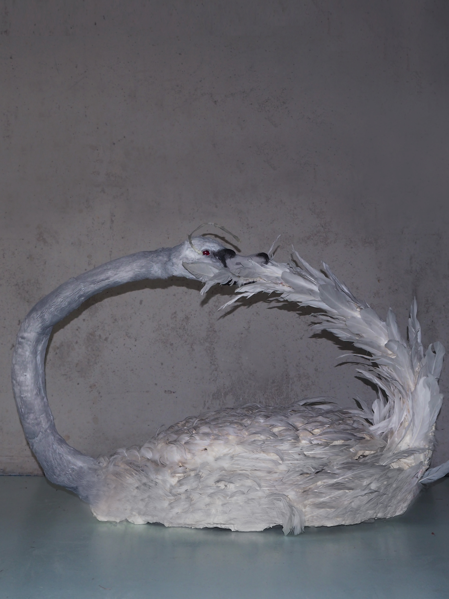
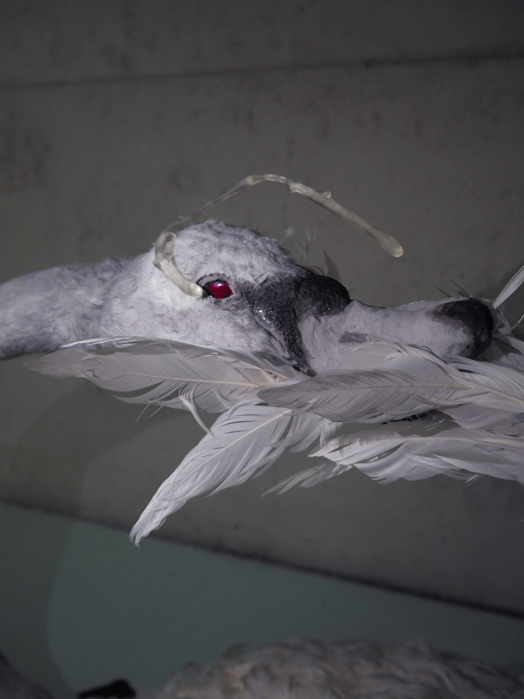
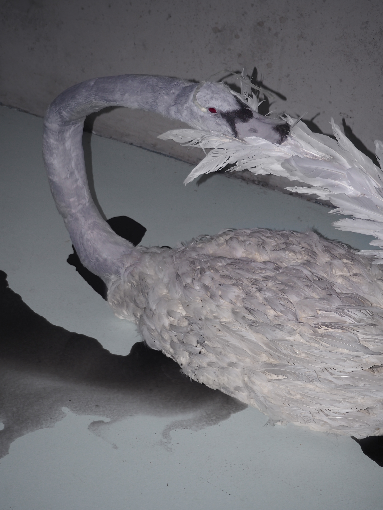

2024
sculpture, video — paper mache, clay, wire armature, faux feathers, fabric, 3D printed tear, red glass beads, chinese ink, polyurethane foam
alive girl is a sculpture of a life-sized grey swan that takes its form as an ouroboros, a ancient symbol that represents the cycle of life, death and rebirth.
 